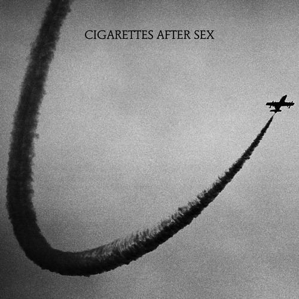

CIGARETTES AFTER SEX
HISTORIA DE LA BANDA
Greg Gonzalez tardó cinco años en encontrar la tecla exacta que pulsar para dar continuidad a ese EP de 2012 que publicó como Cigarettes After Sex y que le convirtió en una especie de leyenda urbana del algoritmo de Youtube, un advenimiento con millones de streams que nadie sabía si iba a tener continuidad más allá de esas cuatro primeras canciones sobre amor, sexo y promesas. Cuando la encontró, y lo hizo en 2017 con su debut homónimo, no ha vuelto a levantar el dedo. Desde entonces, y lo hemos visto también en Cry (Partisan Records, 2019), Gonzalez luce infinitas formas de declararnos su amor y sus ansias de llegar al momento que describe el nombre de su proyecto artístico, pero solo un camino: el susurro eterno, las melodías a cámara lenta, el blanco y negro como filtro permanentemente activado.
MEJORES MUSICAS

“Saltaste desde puentes que se derrumbaban mientras observabas como la ciudad se convertía en polvo. Ibas filmando helicópteros que se estrellaban en el océano desde lo alto”. A través de la letra nos persiguen unas imágenes oníricas en las que dos almas se encuentran y desencuentran en diversos escenarios. Es como si la desventura diera saltos entre distintos sueños confusos, dejando tras de sí un rastro sin significado aparente. ¿Quién no se despertó de un sobresalto y se trabó de inmediato en una llave de lucha grecorromana con su propio cerebro, intentando que éste confiese esos sueños que ocurrieron hace instantes y que se hunden rápidamente en el olvido?
APOCALYPSE
AFFECTION
El elevado (si lo comparamos con el resto, claro) número de visitas recibidas en este blog a propósito de la soberbia «Nothing’s Gonna Hurt You Baby» resulta bastante elocuente: las increíbles canciones que firman Cigarettes After Sex claman por un mayor reconocimiento del hasta ahora dispensado por los medios, y el grupo de Brooklyn parece llamado a convertirse en uno de esos secretos que, cuando por fin son revelados, provocan una auténtica conmoción.
FALLING IN LOVE

Después de dos largos años de espera, de muchos misterios y de algunos sencillos lanzados durante el transcurso del año pasado, Cigarettes After Sex acaba de anunciar que ya tiene listo el sucesor de su álbum homónimo: Cigarettes After Sex (2017). Se trata de Cry, un LP de 9 tracks minimalistas llenos de profundidad, sensualidad y erotismo que podremos escuchar a partir de el próximo 25 de octubre a través de Partisan Records.
Para seguir con la promoción antes del lanzamiento oficial, la agrupación ha presentado "Falling in Love", tema grabado en Mallorca, España y en el que podemos escuchar un caso de enamoramiento. ¡Dale play a continuación!